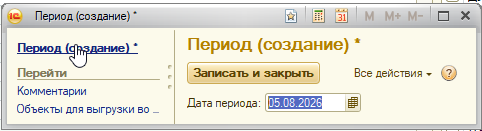
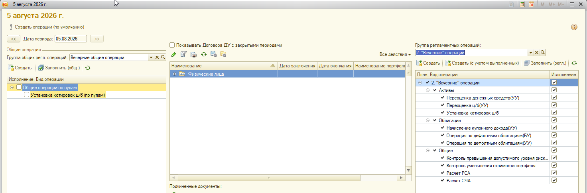
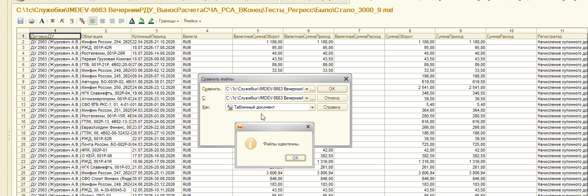
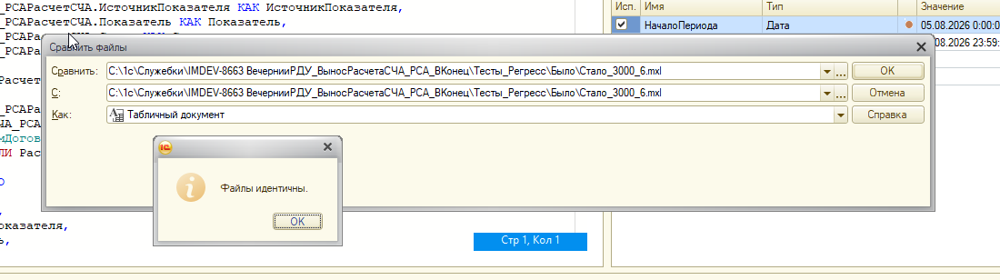
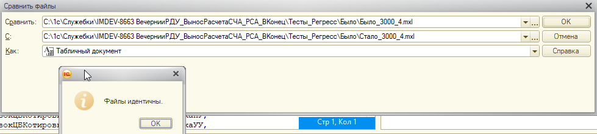
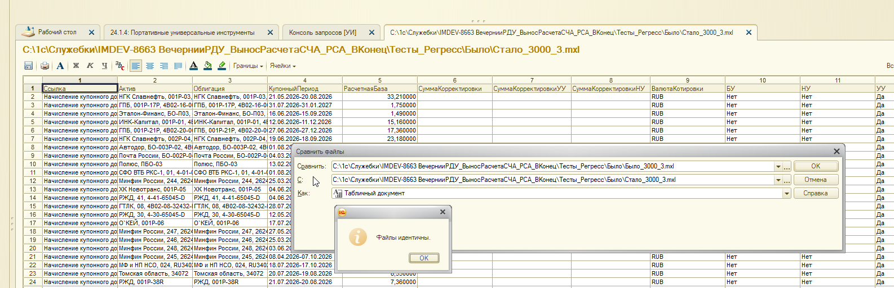
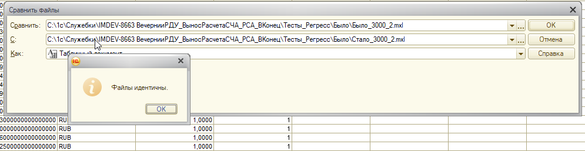
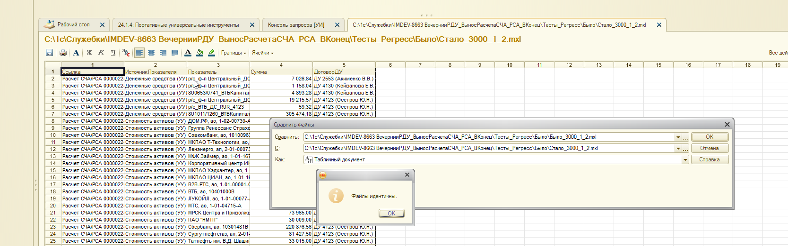
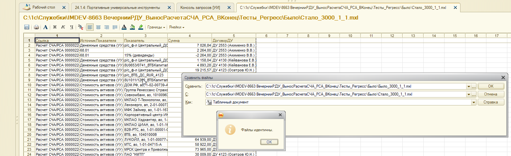

Источник: Тесты_Регресс.rar
(ТестыРегресс_8663.docx + 7 пар MXL) |
Платформенное тестирование: IMDEV-9320 |
Доработка: IMDEV-8663.1
IM8663
документы/движения совпали с эталоном. Это тест T-06 из плана
(test_plan_measurements_bg.html): качество данных на отборе ~3000 физлиц.
Регресс выполнен 17.08.2026. Сценарий:
IM8663 v1.0.0.1 (назначение «Адаптация», безопасный режим выкл.).Было_3000_* vs Стало_3000_*.| Параметр | Значение |
|---|---|
| Задача тестирования | IMDEV-9320 |
| Доработка | IMDEV-8663.1, расширение IM8663 1.0.0.1 |
| Дата периода | 05.08.2026 |
| Группа регл. операций | 2. «Вечерние» операции |
| Отбор договоров | Физические лица, ~3000 |
| Первый прогон (было) | Старт 17.08.2026 5:49, финиш 6:29:21 — 40 минут |
| Второй прогон (стало) | После включения IM8663. Длительность в протоколе не зафиксирована |
| Способ сравнения | 1С: «Сравнить файлы» как табличный документ; независимо — MD5 файлов |

Дата периода: 05.08.2026.

Форма периода: группа «2. Вечерние операции», отбор «Физические лица». В дереве отмечены операции вечернего регламента, включая расчет РСА/СЧА (на этом контуре они ещё в группе 2 — вынос в группу 3 это IMDEV-8663.2).
Перед вторым прогоном включено расширение IM8663 1.0.0.1 (рядом IMTOOLS).
| Файл | Размер | Что видно в выгрузке (по скрину / имени) | Сравнение 1С | MD5 «было» = «стало» |
|---|---|---|---|---|
3000_1_1 |
33,5 МБ | Строки документов «Расчет СЧА/РСА» (источник показателя, сумма, договор ДУ) | идентичны | b8f54dc8… |
3000_1_2 |
32,3 МБ | Тоже «Расчет СЧА/РСА» (вторая таблица/выборка по тем же документам) | идентичны | 5815aca6… |
3000_2 |
30,9 МБ | Табличный документ с идентификаторами / суммами (валюта RUB) | идентичны | 3d1cf6d6… |
3000_3 |
22,5 МБ | Документы «Начисление купонного дохода»: актив, облигация, купонный период, база, УУ | идентичны | 772c4763… |
3000_4 |
53,2 МБ | Самая большая выгрузка пакета (содержимое на скрине перекрыто диалогом) | идентичны | ade5ec8c… |
3000_6 |
2,9 КБ | Пустая/короткая выгрузка (оба файла одинакового размера). На скрине в диалоге случайно указан один и тот же путь «Стало»; независимый MD5 пары Было/Стало совпал | идентичны | 6ad73a6b… |
3000_9 |
18,2 МБ | Движения НКД: договор, облигация, купонный период, обороты, регистратор «Начисление купонного дохода» | идентичны | 9dfbcd36… |
Полный MD5 посчитан по файлам из архива после распаковки.
Имена в архиве: Было_3000_*.mxl и Стало_3000_*.mxl.
Ниже — диалоги 1С «Сравнить файлы» из ТестыРегресс_8663.docx, в том же порядке,
что в документе (после включения расширения).
3000_9 — движения НКД
Было_3000_9.mxl vs Стало_3000_9.mxl — файлы идентичны.
3000_6 — короткая выгрузка
Диалог 1С: «Файлы идентичны.» На скрине в оба поля попал путь Стало_3000_6; контроль MD5 пары Было/Стало — совпадение.
3000_4
Было_3000_4.mxl vs Стало_3000_4.mxl — файлы идентичны.
3000_3 — начисление купонного дохода
Было_3000_3.mxl vs Стало_3000_3.mxl — файлы идентичны.
3000_2
Было_3000_2.mxl vs Стало_3000_2.mxl — файлы идентичны.
3000_1_2 — расчет СЧА/РСА
Было_3000_1_2.mxl vs Стало_3000_1_2.mxl — файлы идентичны. На фоне строки «Расчет СЧА/РСА 00000022».
3000_1_1 — расчет СЧА/РСА
Было_3000_1_1.mxl vs Стало_3000_1_1.mxl — файлы идентичны.
3000_6 одинакова с обеих сторон: новый путь не «дорисовал»
лишних строк.IM8663 на этом контуре можно считать безопасным по результату
относительно «как было» (типовые ФЗ по договору).
Скриншоты скопированы из ТестыРегресс_8663.docx в
Документация/01_background_jobs/regression_8663_1/.
Исходные MXL (~191 МБ × 2) остаются в Тесты_Регресс.rar и в отчёт не дублируются.